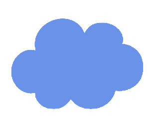

emojiMandala.net
..Loading

ronErlihStudio
Thank you!
🤯
When you purchase an NTF from the
collection
you can set it's nickname!
emojiMandala.net
NFTs
Your browser does not support the audio element.
(emojis from emojipedia.org)
ronErlihStudio.com
Categories
😃
Smileys & People
🐻
Animals & Nature
🍔
Food & Drink
⚽
Activity
🌇
Travel & Places
💡
Objects
🔣
Symbols
🎌
Flags
🤓
Emoji news delivered to your 📥 inbox. 📝 Sign up here, it's free.
Tips
Zero Width Joiner
Modifiers
Categories
😃
Smileys & People
🐻
Animals & Nature
🍔
Food & Drink
⚽
Activity
🌇
Travel & Places
💡
Objects
🔣
Symbols
🎌
Flags
Most Popular
🤷
Shrug
😂
Face With Tears of Joy
❤
Heavy Black Heart
🎄
Christmas Tree
😍
Smiling Face With Heart-Shaped Eyes
🖤
Black Heart
😊
Smiling Face With Smiling Eyes
🔥
Fire
🎅
Father Christmas
Latest News
�
Turn A Question Mark Box Into An Emoji
🍑
How We Really Use The Peach
📲
iOS 10.2 Emoji Changelog
👤
Emoji Dictator of the World
🏳
Regional Flag Support For Unicode in 2017
🇨🇺
Fidel Castro's Death Brings Mixed Emotions
🦃
Happy Thanksgiving
🤙
Proposals for Shaka and West Coast Hand
Events
🇦🇺
Australia Day
🇫🇷
Bastille Day
🎂
Birthday
🛍
Black Friday
🇨🇦
Canada Day
🇧🇷
Carnaval
🐉
Chinese New Year
🎅
Christmas
🇲🇽
Cinco de Mayo
🇨🇳
Dragon Boat Festival
🐰
Easter
🎥
Emoji Movie
🍂
Fall / Autumn
👨
Father’s Day
💪
Festivus
🎓
Graduation
🔥
Guy Fawkes
🎃
Halloween
🕎
Hanukkah
🕉
Holi
🇺🇸
Independence Day
👩
Mother’s Day
🎊
New Year’s Eve
🏊
Olympics
👑
Queen’s Birthday
☪
Ramadan
🌱
Spring
☘
St Patrick’s Day
☀
Summer
🏈
Super Bowl
🦃
Thanksgiving
💘
Valentine’s Day
👰
Wedding / Marriage
⛄
Winter
🎿
Winter Olympics
⚽
World Cup
🌎
World Emoji Day